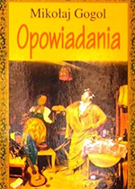

Dzisiaj pragnę przedstawić Państwa uwadze zbiór opowiadań, napisanych we wczesnym etapie kariery przez jednego z najwybitniejszych pisarzy rosyjskich – Mikołaja Gogola.
Dla tych wszystkich, którzy Gogola nie znają, lub znają go poprzez jego sztandarowe dzieło „Martwe dusze”, lektura tychże opowiadań może okazać się sporym zaskoczeniem.
Baśniowość i niezwykły koloryt obrazów kreowanych przez pióro mistrza porywają i zachwycają. Jest to ten rodzaj lektury, przy którym – nie wiadomo kiedy – porzucamy nasze codzienne troski i przenosimy się w inny wymiar.
Opowiadania te stanowią również niezwykły obszar pracy pisarza, nie zmącony wrzawą opinii społecznej, bolesnych napaści i zbliżającego się załamania psychicznego. Są jak bezpieczny azyl, do którego zaprasza nas autor.
Na zachętę, poniżej przedstawiam cytat z pierwszego opowiadania w tomie, „Noc wigilijna”.
„Tymczasem diabeł po cichutku podkradał się do księżyca i już wyciągał rękę, by go schwycić; nagle jednak cofnął ją, jakby się oparzył, possał palec, wierzgnął nogą, zabiegł z drugiej strony, po czym znowu odskoczył i cofnął rękę.
Jednakże, pomimo niepowodzenia, chytry diabeł nie zaprzestał zbytków. Podbiegłszy, porwał obydwiema rękami księżyc, wykrzywiając się i dmuchając przerzucał go z ręki do ręki, jak chłop, który wydostał gołymi rękami węgiel do fajki; aż wreszcie pośpiesznie schował go do kieszeni i jakby nigdy nic pobiegł dalej.
W Dikańce nikt nie zauważył, że diabeł ukradł księżyc. Co prawda, pisarz gminny, wychodząc na czworakach z szynku, widział, jak ni stąd, ni zowąd księżyc zaczął tańcować po niebie…”
Mikołaj Gogol , urodził się w Soroczyńcach Wielkich. Przez wiele lat mieszkał w Petersburgu, Paryżu oraz Rzymie. Największą sławę zdobył dziełem „Martwe dusze”, które w zamierzeniu autora było epopeją o Rosji na miarę Boskiej komedii Dantego. Niestety, kolejne tomy dzieła nie powstały, a autor do końca życia znosił ataki i oskarżenia o zdradę własnego narodu, jako że nakreślony wizerunek społeczeństwa rosyjskiego nakreślony przez autora jest bardzo gorzki – przedstawia ludzi upośledzonych moralnie i bezdusznych.
Ataki te i nasilający się konflikt wewnętrzny wkrótce znalazły ujście w załamaniu nerwowym autora. Mikołaj Czernyszewski – filozof i utopijny socjalista napisał o Gogolu tak:
„Jakkolwiek wielkie były twe błędy, męczenniku bolesnej myśli i wzniosłych dążeń, byłeś jednym z najszlachetniejszych synów Rosji i bezgraniczne są twe zasługi wobec ojczyzny.”
Spośród ważnych dzieł autora można wymienić Rewizora oraz opowiadania inspirowane folklorem ukraińskim.
Rafał Miętkiewicz
+48 515 972 624
rafalmietkiewicz@icloud.com
Podaj swój adres e-mail, aby otrzymywać informację o nowych artykułach.